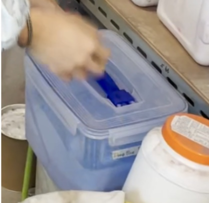
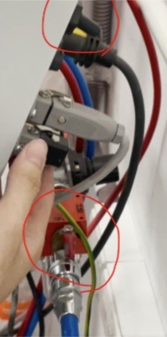
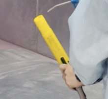
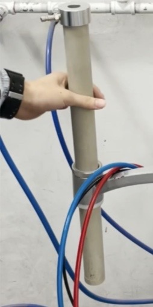
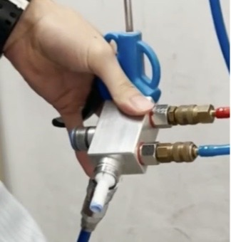

Powdercoating
Last updated January 9, 2024
Attention
WEAR SAFETY GOGGLES , Ear Protection , Face Mask , and Lab Coat
Instructions
Preparation:
After sandblasting the surface of the box channel/part, wipe it down with alcohol to remove fine grains of sand/metal dust.

Wiping the surface with alcohol allows for direct exposure of the box channel/part with the powder and allows the powder to stick easily.
The alcohol and rag should be located next to the powder coat machine but often are left in bays.
IMPORTANT: PLEASE PUT THEM BACK NEXT TO THE POWDER COAT MACHINE SO WE DO NOT LOSE ANYTHING.
Important
Important: Before you do this step, you should have already sanded down the box channel/part either with an Orbital Sander or the Sandblaster.
Please refer to those steps if you have not done so.
Cut and bend wire to create loops to hang your box channel/part:

Use a Diagonal Cutters to cut the wire to preferred length and bend the ends together to make a loop.
Wires are normally found in a big roll around the powder coat machine.
There are also hooks to use if the part is too big or somehow the wire doesn’t hang it completely.
Pro tip: In the case that you have “tapped” a hole, there are two ways to powder coat the box channel/part:
Screw a placement screw into the tapped hole to ensure that no powder will enter the tapped hole.
Powder coat the hole as normal but you must retap it once you finish powder coating.
In general, the best option would be powder coating everything first and then tapping after the powder coating is done.
Turning on the Machine/Prepping for Powder:
There is a control panel on the wall in the powder coating room. When beginning to powder coat, always turn on the 1) light, then 2) power, and then the 3) fan.
Caution
Caution: Turning on the fan will cause a loud whirring noise as well as occasional bursts of loud sound. Wear ear protection!!!
Caution
Caution: You should NEVER be touching the blower buttons.
Powder coating room is always maintained in a dry, high temperature atmosphere. Static electricity is highly present.
Make sure you have put on all your safety equipment (goggles, coat, mask, ear protection).
Choose the color you want to powder coat:
Open the color and set it on top of the powder coating cart

Caution
Caution: Please check that the powder coating machine has been cleaned already of the previous color. If the machine is not clean, you CANNOT use another color because they will mix (Note: unless the previous color is identical to what you are using).
If the machine is not clean, you must clean the powder coating machine. Please refer here/step 5.
Note
Keep in mind that if the machine was not cleaned when you were setting up, it means that the person using the machine before DID NOT FOLLOW INSTRUCTIONS!!
Move the powder coating barrel into the tray:

Turn on the powder coating gun machine:
There are two switches you must turn on at the back of the machine: The red air valve and the black switch.
Black switch ON: Machine screen should light up.
Red air valve open: Red valve is parallel to the blue tube.
Check to make sure all air valves and tubing are connected so that powder doesn’t come out of the wrong place.
Powder coating:
Now, pick up the powder coating gun and press the trigger to spray powder.

Spray directly at the box channel and apply a REASONABLY THICK BUT EVEN LAYER of powder to all sides (corners, faces, holes).
Pro Tip: Spray from about 30 centimeters from the box channel.
The more you practice, the better you will be at finding the optimal distance: make sure it is not too close that it is inefficient or not too far that it barely touches the part/leaks outside of the hood.
You can turn the hanger to make sure you spray everything.
Caution
Caution: When turning the hanger, gloves are recommended to avoid static electricity.
If powder does not come out immediately, do not worry:
The most common reason is that the powder takes a lot of time to make its way up the barrel and into the gun. Check the powder coating barrel that it is vibrating and lodged firmly into the powder.
You can always turn off the machine to check if the powder has come up.
If the powder still is not spraying, ask for help!
Caution
Caution: Please spray into the vacuum chamber and NEVER AT PEOPLE!!
Hanging the box channel:
Remove your part from the hanger and transfer to the oven.
Caution
Caution: Make sure not to let the coated surface touch any other surfaces because powder might get wiped off - hold the part by the hook instead.

Once all the parts are transferred, let a shoptech/mentor know that the box channel/part is ready to be heated in the oven.
Note
Note Never turn on the oven by yourself unless directed by a shoptech/mentor.
Cleanup:
Close the switches on the powder coating machine (the air valve and the black switch):

Manually shake powder out of the barrel before removing the barrel tube from the powder container.

Remove the powder container from the powder coating cart, seal it, and place it back on the powder shelf.

Take apart the powder coating gun:
Remove the black cap and the white nozzle inside the cap; thoroughly cleanse with the air gun.

Clean the outside and inside of the gun:
Remove both tubes attached to the gun and blow air through one side:

Caution
Caution: Expect powder to come out of the other size of the tube. Point tube towards chamber.
Re-attach both tubes onto the gun.
Remove the powder coating barrel:

Remove any attached air valve/air adapters.
Clean the barrel with the air:

Slide the barrel back in the circular slot:

Remove the air adapter:
Remove any attached air valves/tubes.
Clean the air adapter with air.

Reassembling:
Attach air valves/tubes back onto the adapter and the adapter back onto the barrel.

Double check that everything is connected: Air → Adapter → Barrel → Adapter → Gun.
Hang the powder coating and air gun.
Turn off the fan, power, and lights!
Remember to leave powder coating specific safety equipment in the room!
ASK IF YOU HAVE ANY QUESTIONS!!!!